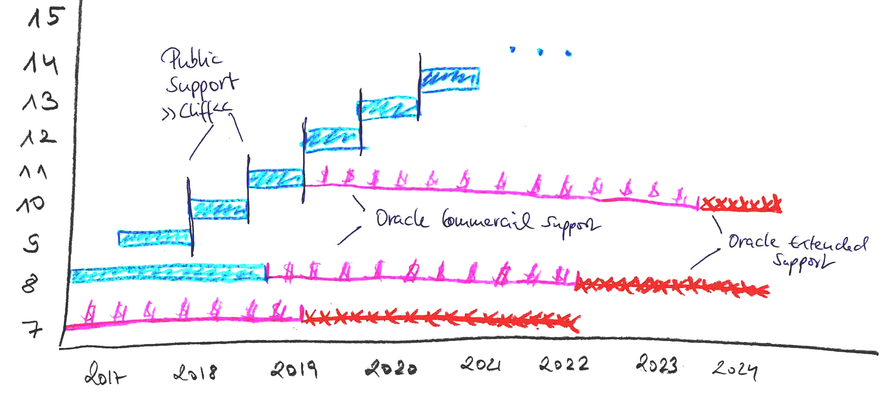
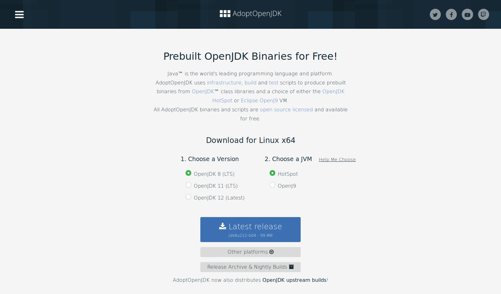

Every 6 months new major release
No support overlap → Support Cliff
Records, Switch, …
What’s new in Java 14?
Benjamin Schmid @bentolor <bentolor @ gmail.com>

Every 3 years new long-term support (LTS)
v11: 2018-09; next v17: 2021-09
tl;dr: Use AdoptOpenJDK & LTS (11)

LTS Support for Java 8 (2023) & 11 (2022) & ff.
AdoptOpenJDK – Plattforms

Java 14 in a nutshell
JVM
JFR Event Streaming
helpful NullPointerExceptions
Platform: deprecate Solaris & SPARC
GC: ZGC for macOS/Win, remove CMS
NUMA-Aware G1
Tools
Packaging Tool (Incubator)
Language
Switch Expressions stable
Pattern Matching for instanceof preview
Records preview
Text Blocks preview
Foreign-Memory Access API
Library
Non-Volatile Mapped Byte Buffers
Remove the Pack200 Tools and API
based on the Java Almanac by Marc R. Hoffmann and Cay S. Horstmann
official Oracle JDK 14 release notes
Language
switch in Java 8
enum Direction {N, S, W, E}
String switchExpressionJDK8(Direction way) {
String result;
switch (way) {
case N:
result = "Up";
break;
case S:
result = "Down";
break;
case E:
case W:
result = "Somewhere left or right";
break;
default:
throw new IllegalStateException("Huh?: " + way);
}
return result;
}Switch-Expression 14 stable
Motivation: Prerequisite for instanceof pattern matching
String switchExpressionJdk14(Direction way) {
return switch (way) { (1)
case N -> "Up"; (2)
case S -> { yield "Down"; } (3)
case E, W -> "Somewhere left or right";
// default -> "Foo" (4)
};
}| 1 | switch can be used as expression |
| 2 | Arrow form → instead of : → no fallthrough / no break; necessary! |
| 3 | Lambdas can be used to. For expressions they must yield a value |
| 4 | default can be ommitted if a) no expression or b) enum with every value handled |
Preview features Preview
Unlock Compilation
$ javac --release xx --enable-previewUnlock Execution
$ java --enable-preview …
xx must exactly match used JDK version
Text Blocks Preview
Java 8
Object obj = engine.eval(
"function hello() {\n" +
" print(\"Hi, world!\");\n" +
"}\n" +
" \n" +
"hello() "+
";"
);Java 14
Object obj = engine.eval("""
function hello() {
print("Hi, world!");
}
\s
hello() \
;\
""");Leading whitespaces identation removed up to the most-left character in the block including the closing
"""All trailing whitespaces removed, line-endings normalized to
\nEscape sequences:
\sfences whitespace trimming,\at line end avoids\ninsertion
instanceof Pattern Matching Preview
Common Java idiom:
if (obj instanceof String) {
String s = (String) obj;
s.toLowerCase();
} else {
// …
}Using v14+ pattern matching:
if (obj instanceof String s) {
s.toLowerCase();
} else {
// can't use s here
}Binding variable s only available in scopes, where pattern matches (!)
Pattern Matching: Scoping Preview
String s = "123";
@Test void bindingVarScoping() {
var obj = Math.random() < 0.5 ? "Oh Magic!" : 9;
if (!(obj instanceof String s))
assertEquals("123", s);
else
assertEquals("Oh Magic!", s);
if (obj instanceof String s && s.length() > 5)
assertEquals("Oh Magic!", s);
else
assertEquals("123", s);
if (obj instanceof String s || s.length() < 5)
assertEquals("123", s);
else
assertEquals("123", s);
}Records Preview
Motivation & Goals
„modeling data as data“
reduce boilerplate &
error-proneness of
plain "data carriers"
Non-Goals
mutable classes
JavaBean conventions
properties
metaprogramming
Records at a glance Preview
Typical „data holder“ class
final class BalanceClass {
final BigDecimal amount;
final Currency currency;
public BalanceClass(BigDecimal amount, Currency currency) {
this.amount = amount;
this.currency = currency;
}
public BigDecimal amount() { return amount; }
public Currency currency() { return currency; }
@Override
public boolean equals(Object o) {
if (this == o) return true;
if ((o == null) || (getClass() != o.getClass())) return false;
BalanceClass that = (BalanceClass) o;
return (amount.compareTo(that.amount) == 0) &&
currency.equals(that.currency);
}
@Override
public int hashCode() { return Objects.hash(amount, currency); }
@Override
public String toString() {
return "Balance[amount=" + amount + ", currency=" + currency +']';
}
}Record data type
record BalanceRecord(
BigDecimal amount,
Currency currency
) {}Immutable data classes that require only field type & names.
Records: usage Preview
var amnt = new BigDecimal(400);
var curr = Currency.getInstance("USD");
record BalanceRecord(BigDecimal amount, Currency currency) {}
var bal = new BalanceRecord(amnt, curr); (1)
var bal2 = new BalanceRecord(amnt, curr);
assertEquals(amnt, bal.amount()); (2)
assertEquals(bal, bal2); (3)
assertEquals(bal.hashCode(), bal2.hashCode());
assertEquals(bal.toString(), "BalanceRecord[amount=400, currency=USD]");| 1 | Default generated constructors |
| 2 | Getter methods not adhering JavaBeans convention |
| 3 | Provides equals(), hashCode() and toString() implementations |
Records: Advanced usage Preview
public record BalanceRecord(BigDecimal amount, Currency currency) {
public BalanceRecord { // Compact c'tor
Objects.requireNonNull(amount);
Objects.requireNonNull(currency);
}
public BalanceRecord(BigDecimal amount) { // Extra c'tor
this(amount, Currency.getInstance("USD"));
}
static Currency EUR = Currency.getInstance("EUR"); // static fields
public static BalanceRecord eur(String cash) { // static methods
return new BalanceRecord(new BigDecimal(cash), EUR);
}
}
var oneDollar = new BalanceRecord(BigDecimal.ONE);
var eur400 = BalanceRecord.eur("400");Java Virtual Machine
Helpful Nullpointer exceptions
Enabled with JRE param -XX:+ShowCodeDetailsInExceptionMessages
public static void main(String[] args) {
var p = new Person("Peter", null);
var e = p.email().toLowerCase();
}Exception in thread "main" java.lang.NullPointerException: Cannot invoke "String.toLowerCase()" because the return value of "MyClass$Person.email()" is null
at MyClass.main(ThrowNullPointer.java:6)If you want names for variables i.e. in lambdas, compile with -g:vars